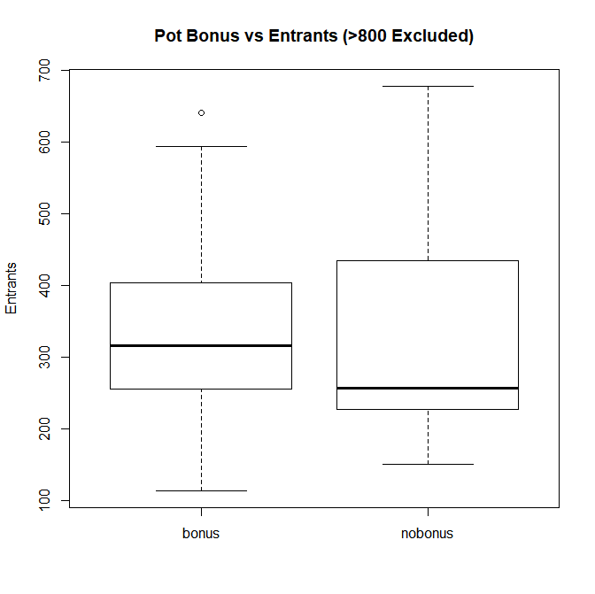

Do Pot Bonuses Affect Entrant Numbers at Melee Tournaments?
Draft: v1.0 | Posted: 9/6/2017 | Updated: N/A | confidence of success: 45% | estimated time to completion: N/A | importance: Low
Abstract
I've heard a number of people make claims about Pot Bonuses being important for large tournaments. The logic is that a pot bonus attracts high-level talent, and high-level talent attracts low-level talent and spectators, "trickling down" to increase entrant numbers. Since this information is very public, I examine this claim with some basic statistics, mostly to practice using R. The resulting examination is not very interesting, and I could find no relationship between pot bonus size (or inclusion at all) and entrant numbers.
Data
I gathered n=60 tournaments from 2015-2017, their entrant numbers, prize pools, pot bonus amounts, dates, and locations. This 60 is the number of tournaments remaining after excluding PAX and Dreamhack events (which have fixed prize pools and free entry w/ admission to the event) as well as invitational events (e.g. Summit, Battle of the Five Gods).
Visualization

Above is a stripchart detailing the two groups (Pot Bonus and No Pot Bonus) plot against number of entrants. Both groups roughly seem to show a cluster of events at the ~400 entrants range, with a long tail extending outwards for very large nationals (EVO, GENESIS, etc).
As a boxplot (which shows some information about density), this data can be seen below.

It might be objected that EVO, the historically most important tournament for Melee players, never has a pot bonus, which could inflate that group's numbers. So below is a boxplot produced the same was as the previous one, excluding all events over 800 entrants.

Still almost no strikingly meaningful visual difference between the two groups.
Correlational Tests
R includes a number of methods used to determine correlation between variables. Most notably, there is Pearson Product-Moment Correlation (covariance divided by product of standard deviations), Spearman's Rho, and Kendall's Tau (Rank correlations, less sensitive to strong outliers). Running these in R on a vector "entrants", which has the entrants of each event; compared to a vector "bonus", which has the pot bonus amount in USD of that event, yields the following.

Overall some pretty nonsubstantial P-values (0.54, 0.80, 0.83), suggesting no real relationship.
Multiple Linear Regression Analysis
In one last attempt to take a stab at it, I'll throw all off the data into a regression analysis in R and see if it spits out any relationships that seem meaningful for predicting the entrant numbers at events.

Short answer: no. There's nothing significant in the data and trying to strip out useless variables strips out every variable. There's simply nothing you can use.
Here's a plot of the bonus size and the entrants, no-bonus labeled black and bonus labelled white, with the regression line overlaid on top of it.
The line's almost perfectly horizontal.
Discussion
There are reasons why you would want an event to have a large pot bonus, and it's certainly possible that ultra-high-level competition would be significantly more attracted to your pot bonus tournament compared to a non-pot-bonus one (potentially useful thing to explore in the future). But, at the end of the day, the size of the pot bonus only seems to matter to an entrant if they are getting far enough in bracket to place in the money, which is usually 8 people out of anywhere from 400 to 2000 people (that is, at best a single digit percentage of the entrants). Speaking personally, I almost never actually know if an event has a pot bonus or not when I sign up - to me they're mostly just excuses to see my friends and compete against good players.
I am not a major TO, and I won't say something like "this money should be going elsewhere" - I don't know where the money for pot bonuses comes from (if it's raised by the organizers, or gifted by sponsors), or if they come attached with stipulations that they must be used as prize money. TOing a tournament with hundreds of people certainly isn't easy and I trust that for the most part TOs are doing a decent job. I merely wanted to examine the claim that pot bonuses trickle down and cause more people to enter events. Although the number of tournaments I examined was somewhat small and was limited to larger events (does this change at a small regional / local level?), the answer seems to be "if there is an effect, it's likely slight and not immediately apparent".
Posted on 9/6/17
Back to Top